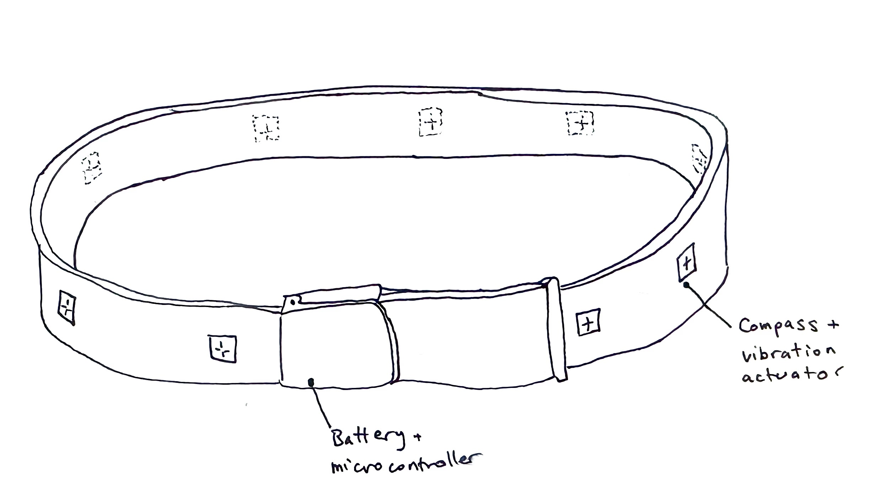
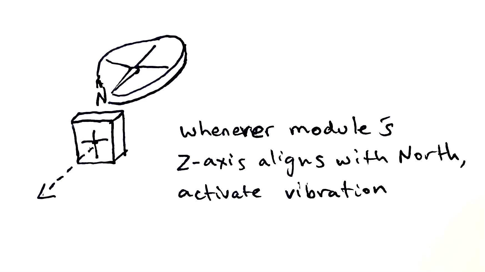
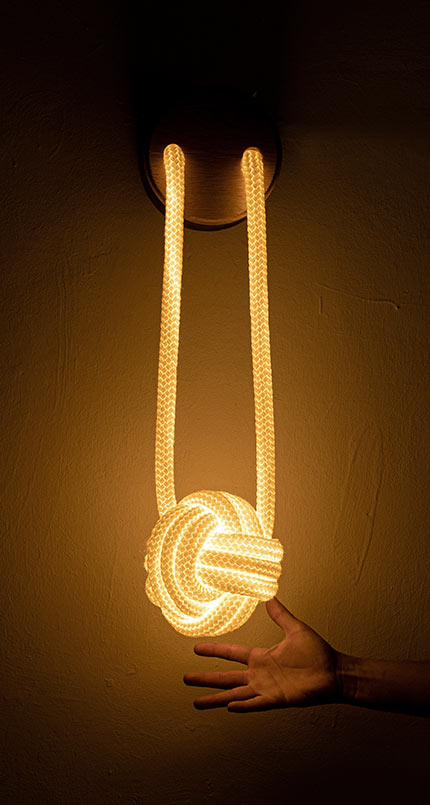

Week 1: Final Project Proposal
Here are 2 ideas for my final project.
Idea 1 : Pigeon Belt
A normal-looking leather belt that vibrates in the direction of north. Embedded with compasses and vibrators, as well as a microcontroller and battery, the MVP of this idea simply has an on-off switch and vibrates whichever vibrating actuator is facing north whenever it faces north (So if the user were to spin in circles, the belt would vibrate in a wave around the user).
Stretch goal: create a companion app for the belt that allows it to send the wearer walking directions from google maps, by vibrating in a different pattern whenever they approach an intersection.

Why is the working title "pigeon belt"? Pigeons always know where north is -- they have an internal compass. Very cool, for an ugly bird! Whenever I'm exploring a new place, my sense of direction is highly reliant on direct sunlight -- but on overcast days or in cities, that's hard to find. A subconsious cue that subtly orients my body to north would be massively helpful to navigating unfamiliar environments.

Diagram of belt design

Diagram of module functionality
Idea 2: Slitheridoo
Didgeridoos are a beautiful instrument invented by indigenous Australians. I've played one for most of my life. But there are cultural and pragmatic problems. As a non-indigenous white-passing Australian, playing this instrument carries a burden of colonial appropriation. From a pragmatic standpoint, they're just big -- 4-5 feet long, made out of heavy wood.
How might a 3D-printed instrument that uses the same mechanics as a didgeridoo, but in a new form factor, honor the heritage without carrying any of the cultural burdens, and allow greater travelability?
Stretch goal 1: construct the slitheridoo out of a translucent plastic and rig it with LEDs such that it lights up in response to the volume and pitch of the sounds played.
Prototype with a vacuum cleaner tube shows how the length could be coiled on itself into a smaller design.

Example knots

Reference image of glowing slitheridoo